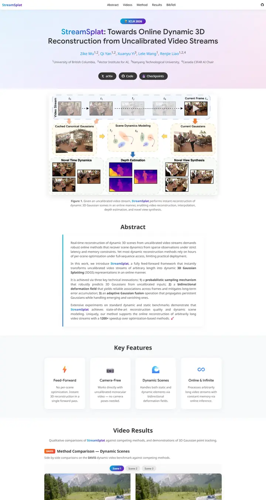

StreamSplat: Towards Online Dynamic 3D Reconstruction from Uncalibrated Video Streams
A soft-launch SaaS page dipped in sunrise pastels, with a cyan-to-violet ribbon tying every accent together.

Checked against the rendered page.
Why it is here
Soft pastel gradient hero with a gradient wordmark and dark pill buttons. The teaser figure is well framed, the abstract card has an accent bar, there is a row of four icon feature cards, and video comparisons use labeled scene toggles. Polished and modern.
Overview
Color Palette
Typography
Google Sans
StreamSplat: Towards Online Dynamic 3D Reconstruction from Uncalibrate
Abstract · Method · Results · BibTeX — 0123456789
Noto Sans
StreamSplat: Towards Online Dynamic 3D Reconstruction from Uncalibrate
Abstract · Method · Results · BibTeX — 0123456789
Spacing & Shape
Page Modules
Guidelines
More like this

GAMEBoT: Transparent Assessment of LLM Reasoning in Games
A tidy game-arena scoreboard: a mascot crest over a navy title, then cool grey-blue gradient bands holding news cards and violet-headed score tables.

InstructPart: Task-Oriented Part Segmentation with Instruction Reasoning
A lab notebook in grey and white stripes, where the title marks its own key words in teal and a dashed-panel kettle explains the task before you read a line.

Symmetrical Visual Contrastive Optimization: Aligning Vision-Language Models with Minimal Contrastive Images
A two-color argument: cyan means the matching image, orange the mismatched one, and that code runs unbroken from the prose highlights into every figure across alternating grey and white bands.

Slamming: Training a Speech Language Model on One GPU in a Day
A one-chart argument: a big annotated scaling plot sits where the teaser video would be, then a grey abstract and a quiet grid of audio players tagged by GPU budget.

Peeking Ahead of the Field Study: Exploring VLM Personas as Support Tools for Embodied Studies in HCI
A field notebook taped open on a white desk: a tall soft-gray headline, a long line of sky-blue names, and a salmon-to-sand storyboard that explains the study in three panels.

Reflection Separation from a Single Image via Joint Latent Diffusion
A pane of night glass you can wipe clean with one drag.